Synthetic regression
MLP vs KAN
Each target has its own section. The numbers describe this configuration: one seed, and MLP and KAN parameter counts that are not matched.
All runs
| Function | Group | Dim | Model | MSE train | MSE test | R² test | Trainable params | Total params | FLOPs |
|---|---|---|---|---|---|---|---|---|---|
| hermite_gaussian | localized | 2 | mlp | 3.03e+01 | 3.30e+01 | 0.073320 | 301 | 301 | 780 |
| hermite_gaussian | localized | 2 | kan | 1.61e+01 | 1.75e+01 | 0.508320 | 912 | 1382 | 624 |
| airy_ai | oscillatory | 1 | mlp | 5.04e-02 | 5.61e-02 | 0.260032 | 321 | 321 | 832 |
| airy_ai | oscillatory | 1 | kan | 4.84e-05 | 5.10e-05 | 0.999328 | 896 | 1470 | 704 |
Airy Ai
Solution of the Airy equation y'' − xy = 0. It oscillates on the negative axis and decays on the positive axis.
Ai(x)
| Metric | MLP | KAN |
|---|---|---|
| MSE train | 5.04e-02 | 4.84e-05 |
| MSE test | 5.61e-02 | 5.10e-05 |
| R² test | 0.260032 | 0.999328 |
| Trainable params | 321 | 896 |
| Total params | 321 | 1470 |
| FLOPs | 832 | 704 |
Target and prediction
MLP
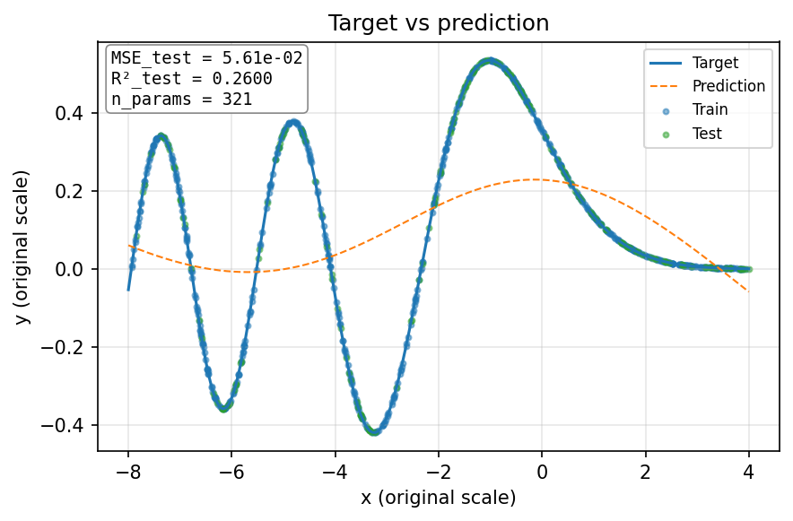
KAN
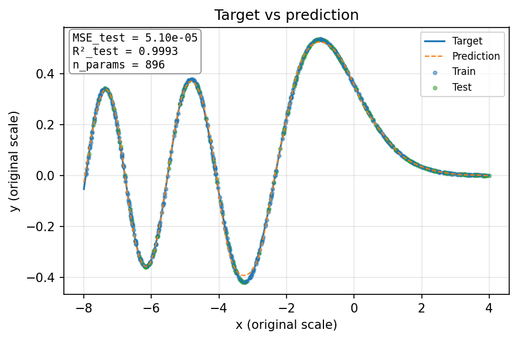
Training curve
MLP
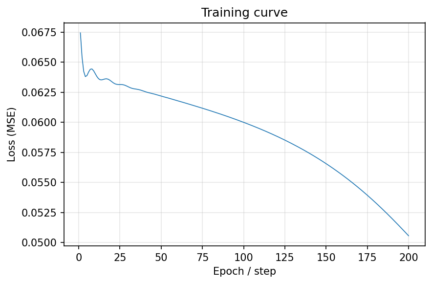
KAN
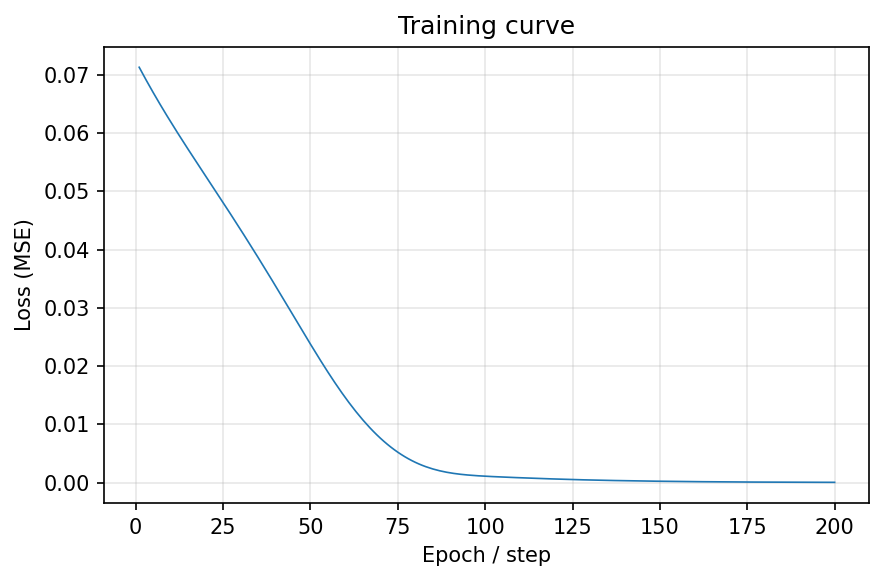
Residuals
MLP
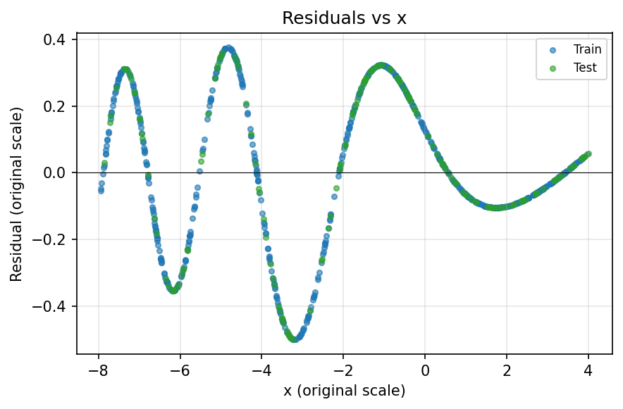
KAN
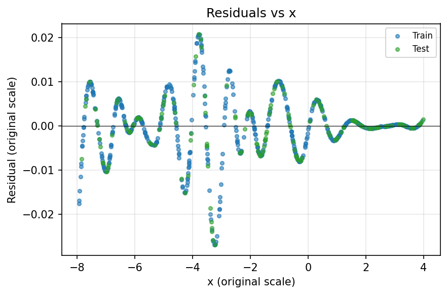
Residual histogram
MLP
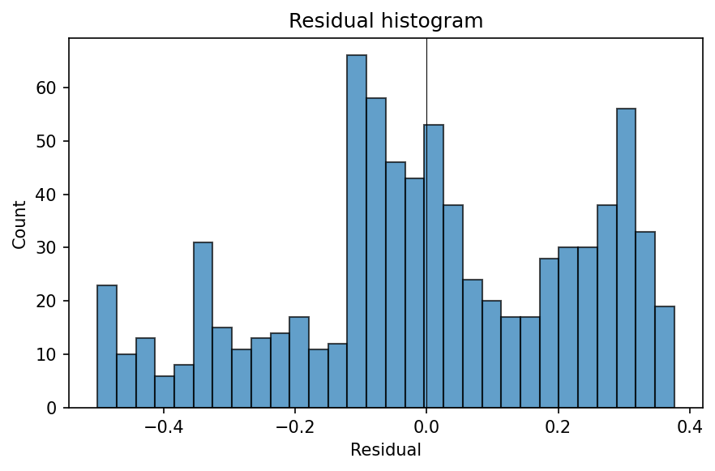
KAN
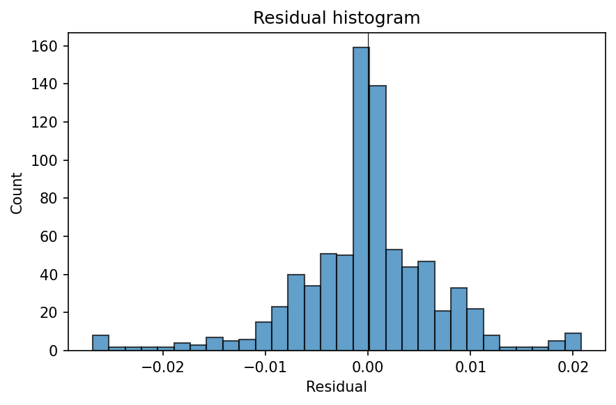
Hermite–Gaussian mode
Unnormalized two-dimensional harmonic-oscillator mode, with nodal lines and a Gaussian envelope.
H₃(x) H₂(y) exp(−(x²+y²)/2)
| Metric | MLP | KAN |
|---|---|---|
| MSE train | 3.03e+01 | 1.61e+01 |
| MSE test | 3.30e+01 | 1.75e+01 |
| R² test | 0.073320 | 0.508320 |
| Trainable params | 301 | 912 |
| Total params | 301 | 1382 |
| FLOPs | 780 | 624 |
Target
MLP
KAN
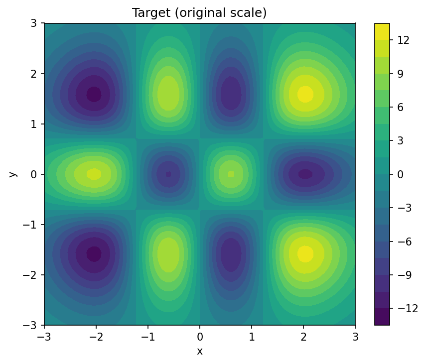
Prediction
MLP
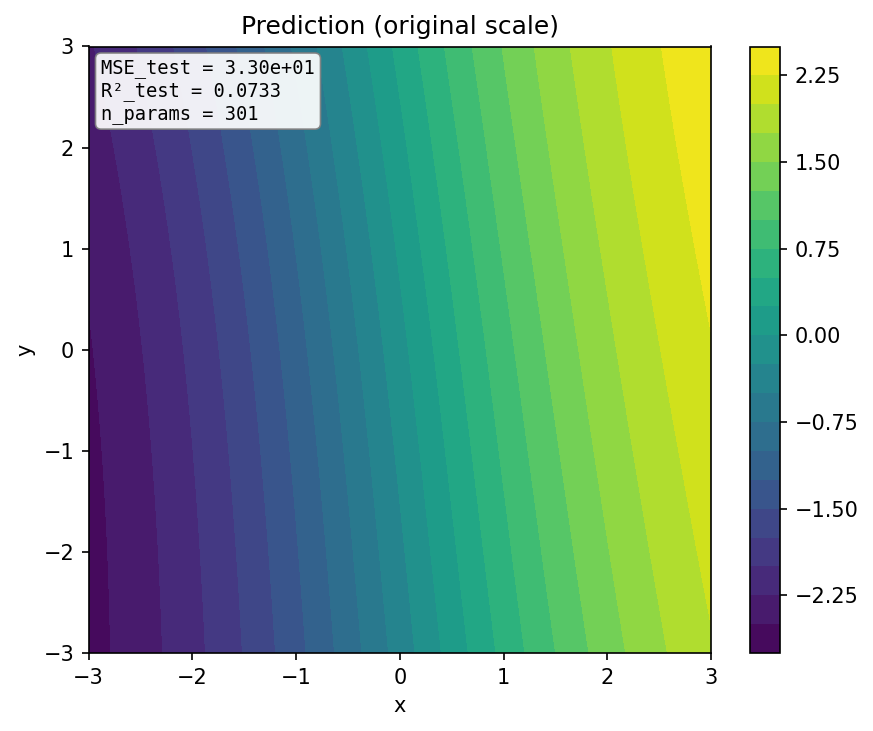
KAN
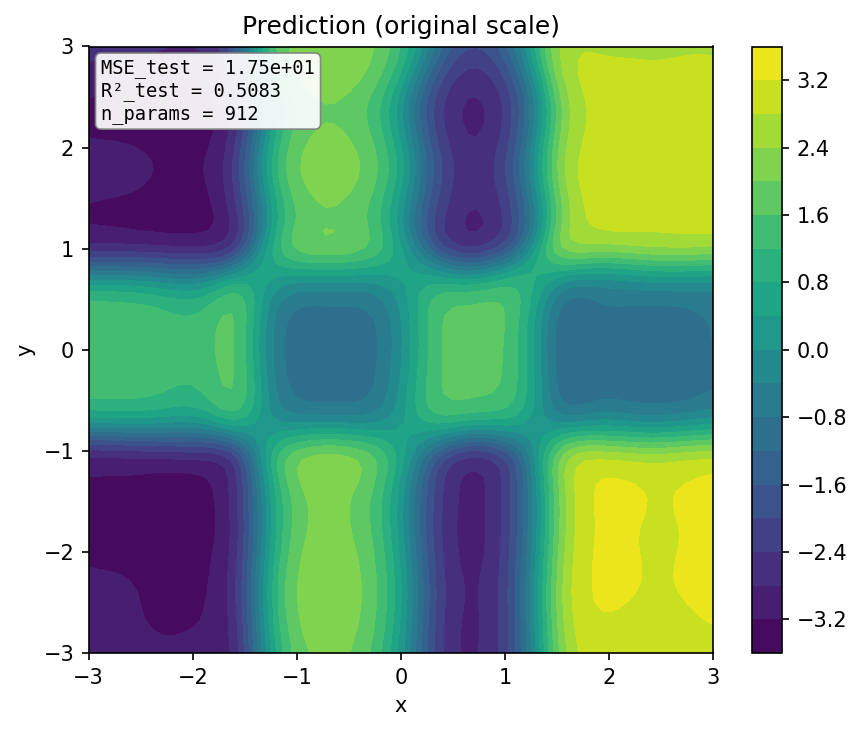
Training curve
MLP
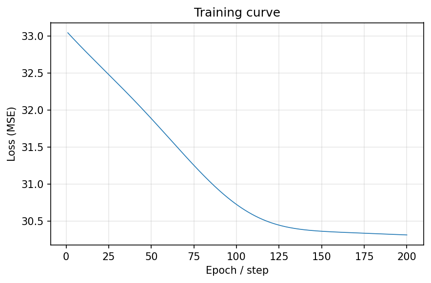
KAN
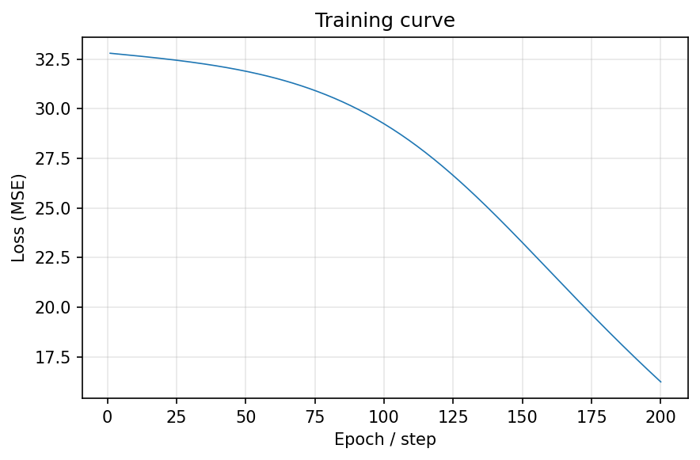
Residual histogram
MLP
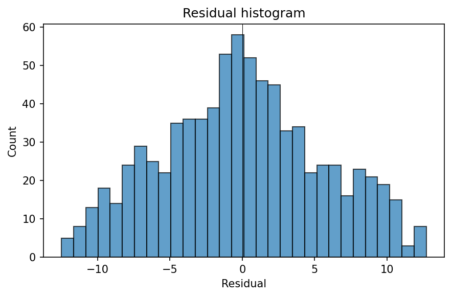
KAN
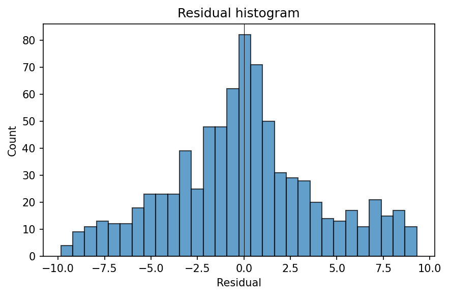
MLP versus KAN
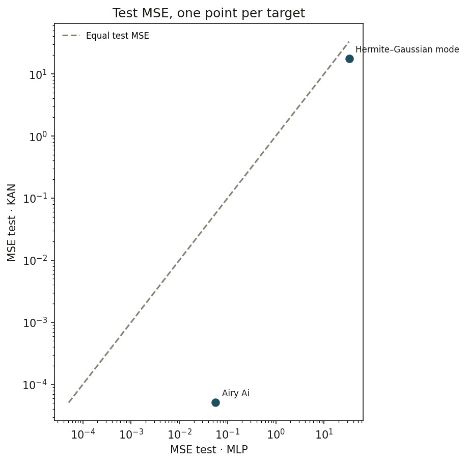